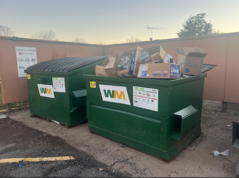
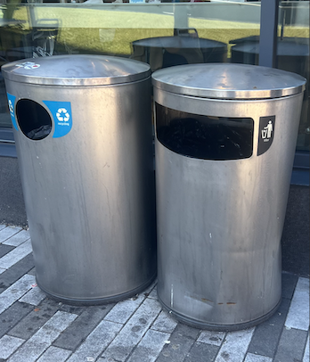
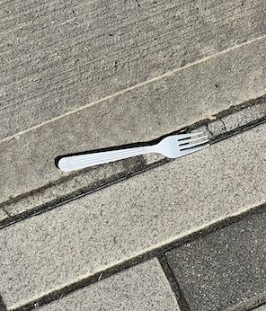

Trash bins by Silvers Apartments on Busch Campus
Recycle bins where we dispose of recyclables by Silvers Apartments on Busch Campus
Trash cans by RU Hungry at The Yard on College Avenue Campus
A white plastic fork lying on the ground by the Yard bus stop on College Avenue. I think it is pretty common for plastic utensils to be found lying on the ground especially around places like The Yard as students would often get take out and rush to classes.